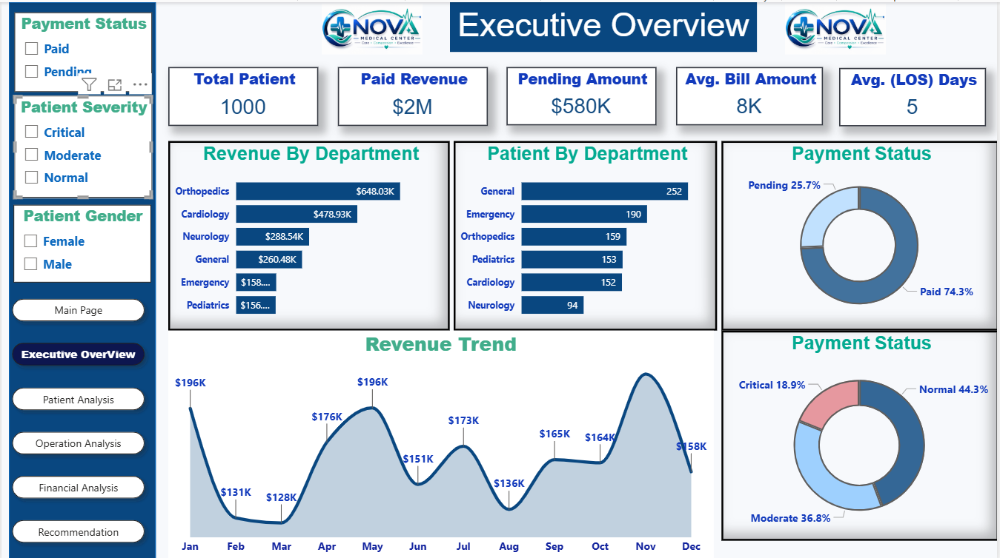
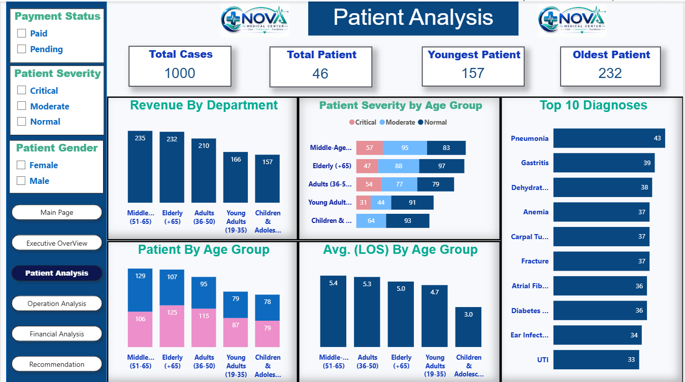
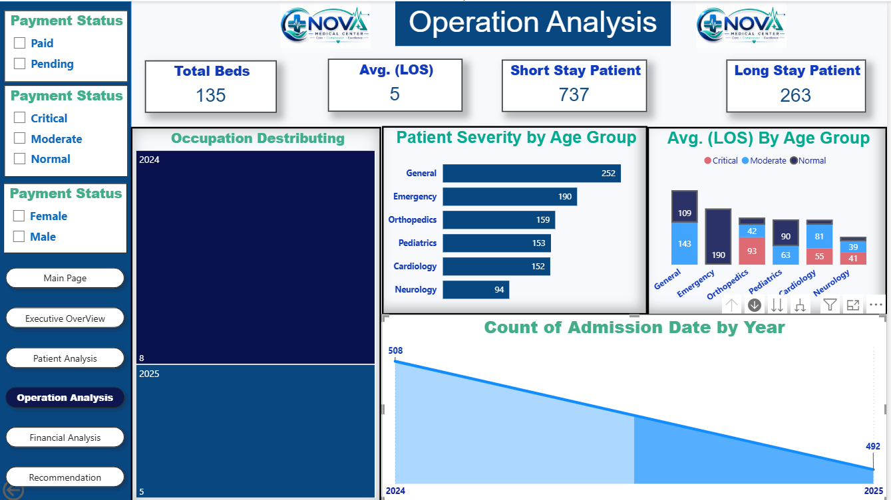
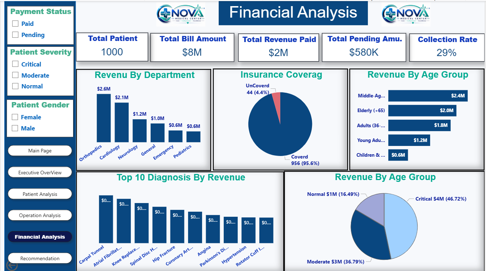
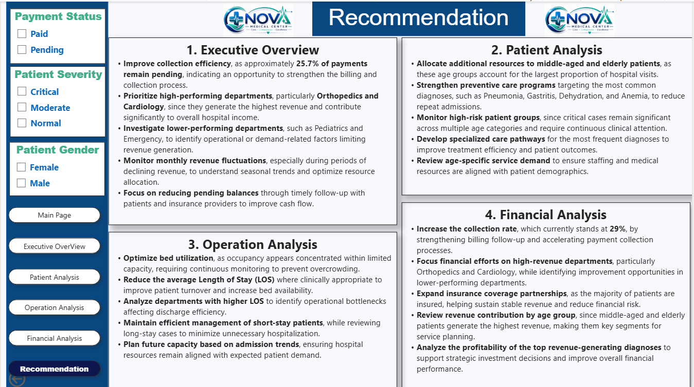

Power BI Case Study
Nova Medical Center Healthcare Analytics
Project Overview
Developed a multi-page Power BI analytics solution to evaluate patient demographics, clinical severity, hospital operations, revenue performance, payment collection, and departmental efficiency.
Performance
Key KPIs
1,000
Total Patients
$8M
Total Bill Amount
$2M
Paid Revenue
$580K
Pending Amount
29%
Collection Rate
5 Days
Average Length of Stay
135
Total Beds
Dashboard Gallery
Power BI Analysis Pages
Executive Overview

Provides a consolidated view of patient volume, paid revenue, pending balances, departmental performance, payment status, severity distribution, and monthly revenue trends.
Patient Analysis

Analyzes patient demographics, age groups, severity distribution, diagnoses, and length-of-stay patterns.
Operation Analysis

Evaluates bed capacity, short-stay and long-stay patients, departmental demand, admission trends, and operational efficiency.
Financial Analysis

Examines billing, paid revenue, pending balances, collection performance, insurance coverage, and departmental revenue contribution.
Recommendations

Converts analytical findings into recommendations covering collection efficiency, patient care, bed utilization, departmental performance, and financial planning.
Analysis
Key Insights and Recommendations
Key Insights
- Orthopedics and Cardiology generate strong revenue contribution.
- Pending balances indicate an opportunity to improve collection efficiency.
- Patient demand varies across age groups and hospital departments.
- Length of stay differs across patient groups and operational areas.
- Critical and moderate cases represent a significant share of patient severity.
Recommendations
- Strengthen billing follow-up and payment collection processes.
- Prioritize high-performing departments while investigating lower-performing areas.
- Monitor high-risk patient groups and frequent diagnoses.
- Optimize bed utilization and investigate departments with higher LOS.
- Align staffing and medical resources with patient demand patterns.